Demographic changes
2025-12-15
Japan’s changing population
Japan’s demographic challenge
If Japan’s working-age population shrinks, can living standards still rise and pensions remain sustainable?
Look for three things as we go through the data.
- How Japan’s population and age structure changed
- How those changes affect growth, saving, and pensions
- Which policy responses address each effect
Japan’s total and working-age populations
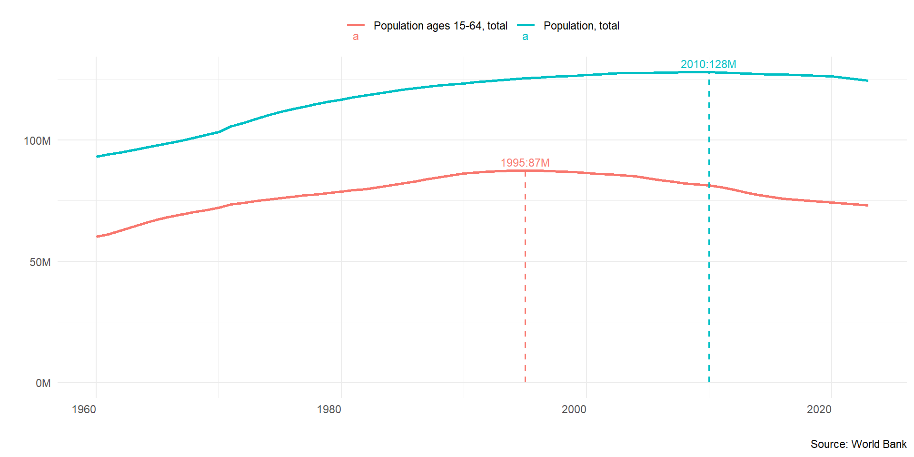
Population growth, fertility, and migration
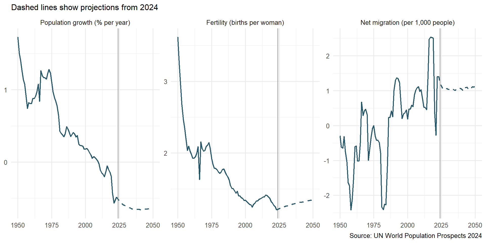
Old-age dependency ratio
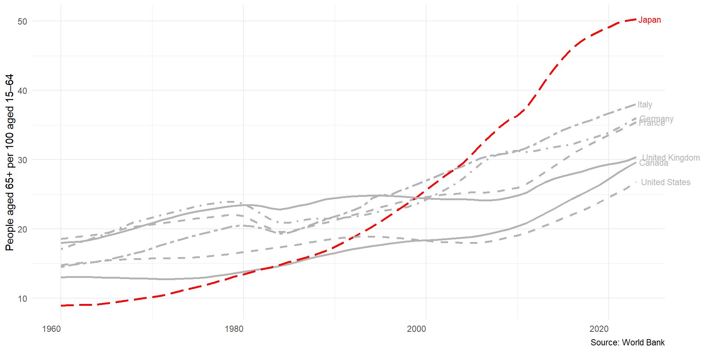
Economic effects
How aging affects the economy
- Growth. A smaller workforce can slow total GDP growth. Higher output per worker or higher employment can still raise real GDP per person.
- Saving. Retirement can change how much households save or draw down. The national saving rate also reflects firms and government.
- Pensions. A smaller contributor base relative to beneficiaries puts pressure on a pay-as-you-go system.
What drives Japan’s GDP growth?
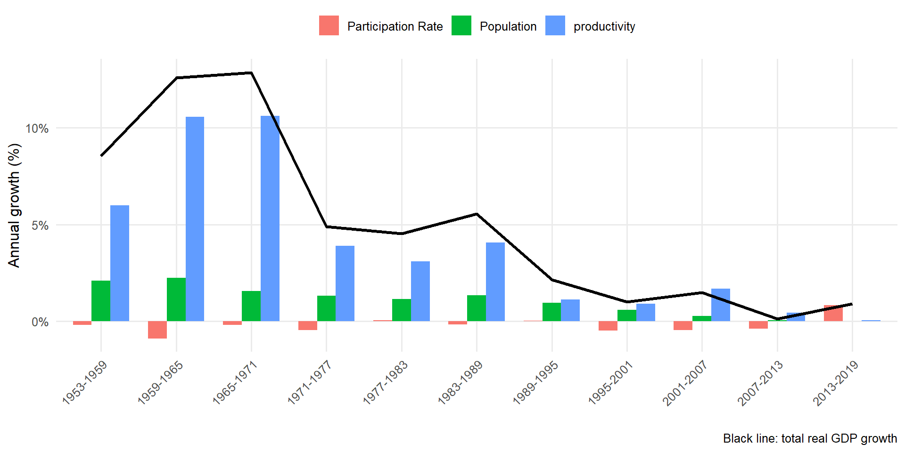
Domestic saving
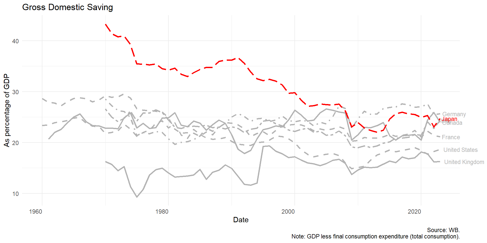
Private saving, investment, and the current account
\[ S_{\mathrm{private}} - I = (G - T) + CA \]
- \(S_{\mathrm{private}}\) is private saving and \(I\) is domestic investment.
- \(G-T\) is the government deficit, with \(T\) measured net of transfers.
- \(CA\) is the current account balance. A surplus corresponds to net lending abroad.
Pension financing
- Pay-as-you-go. Current contributions help finance current pension benefits.
- Aging. Fewer contributors per beneficiary can raise the financing needed from other sources.
- Japan. Tax revenues and pension reserves also help finance benefits.
Public spending on old-age benefits
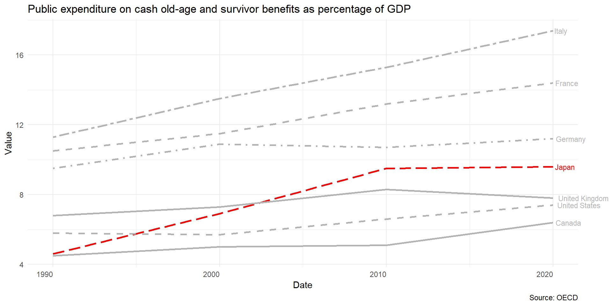
Pension contribution rates
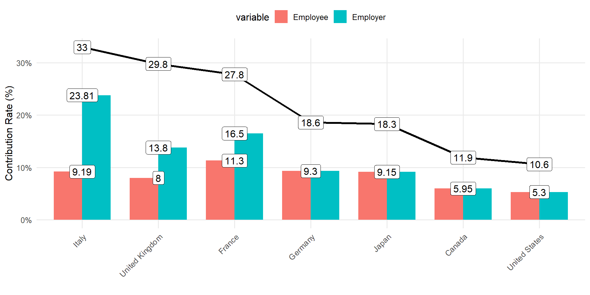
Policy responses
What can policy change?
| Policy objective | Examples |
|---|---|
| Increase labor supply | Support employment among older workers and women, and recruit foreign workers |
| Raise output per worker | Invest in digitization, technology, and skills |
| Sustain pension financing | Adjust contributions, benefits, eligibility, or tax funding |
Retirement ages

Source: OECD pensions at a glance
Employment rates of older workers
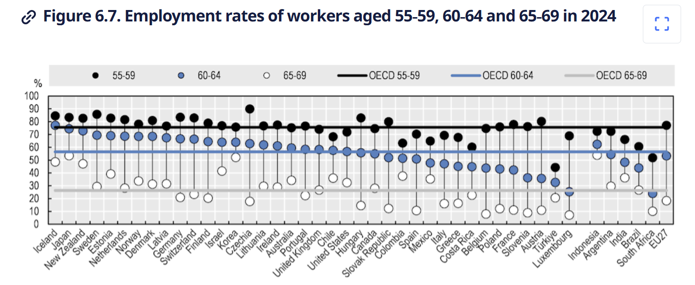
Source: OECD pensions at a glance
Labor force participation by gender
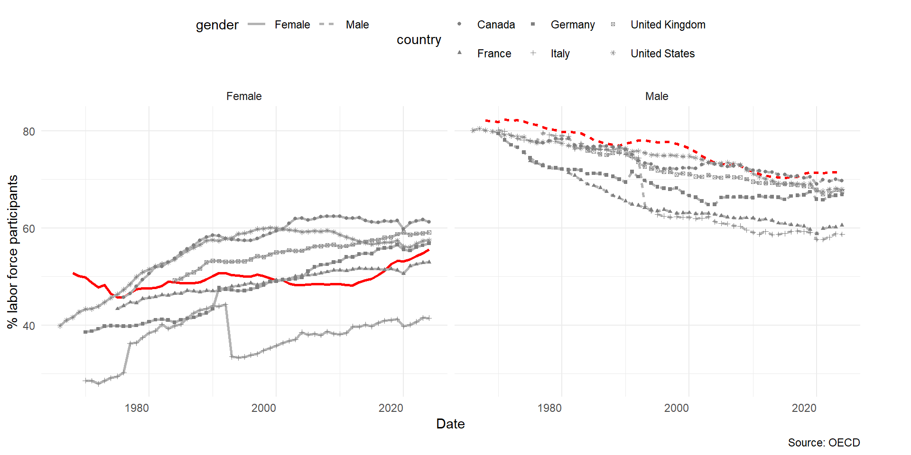
Women’s participation by age
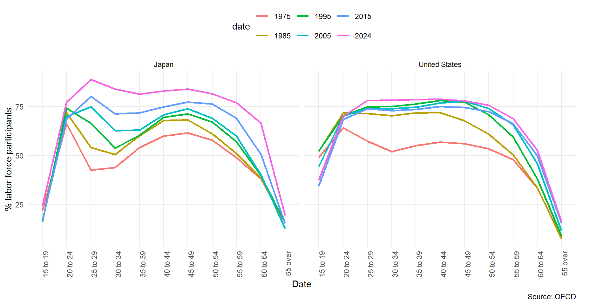
Women’s participation and fertility
Does the relationship look the same in each year? What could influence both outcomes?
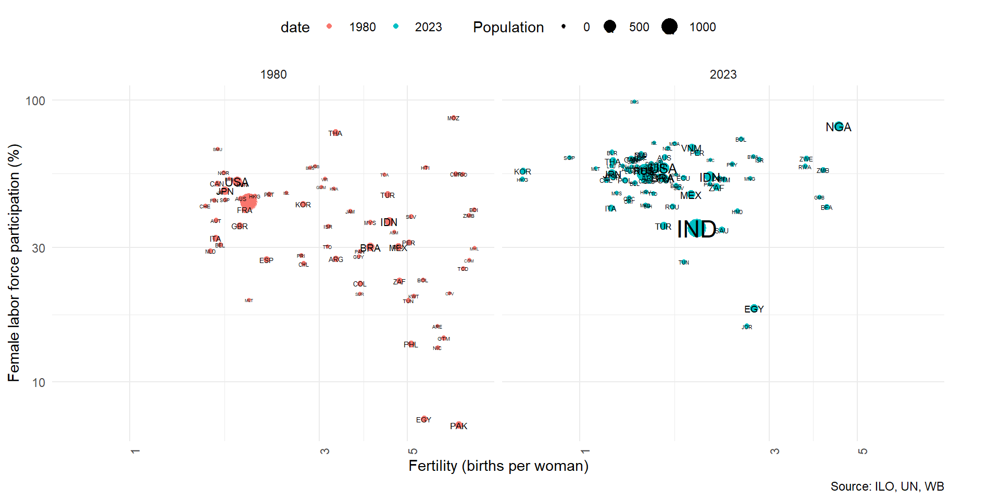
ICT and productivity
Can technology help when workers are scarce?
Total output equals hours worked multiplied by output per hour.
If hours worked fall by 10%, how much must output per hour rise to keep total output steady?
About 11.1%. With 90% of the original hours, output per hour must rise to \(1/0.90\) times its original level.
How does Japan’s ICT investment compare?
Compare Japan, Germany, and the United States in 2023. What else would we need to know to assess productivity?
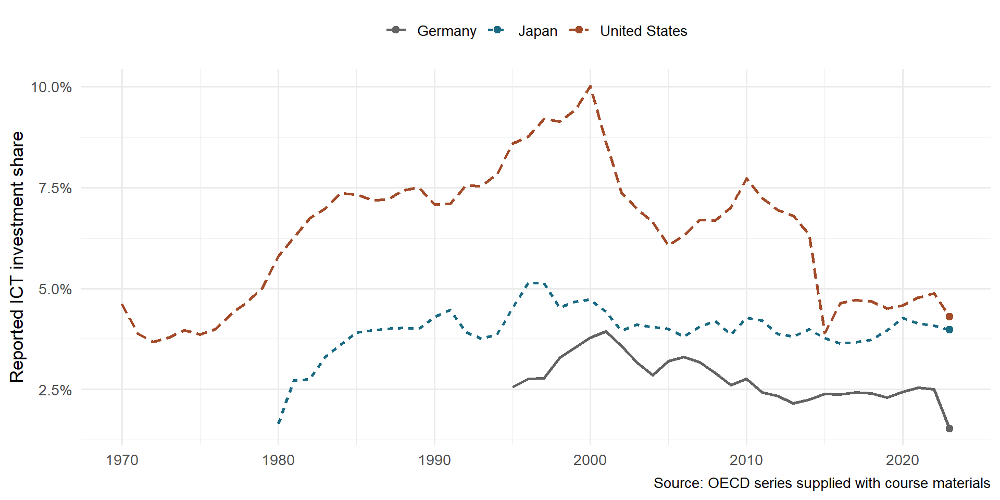
Figure 1
Historical productivity growth by sector

Annual total factor productivity growth across sectors and countries, 1980–2008. Source: Fukao et al. (2016), Figure 1.
How automation can affect labor demand
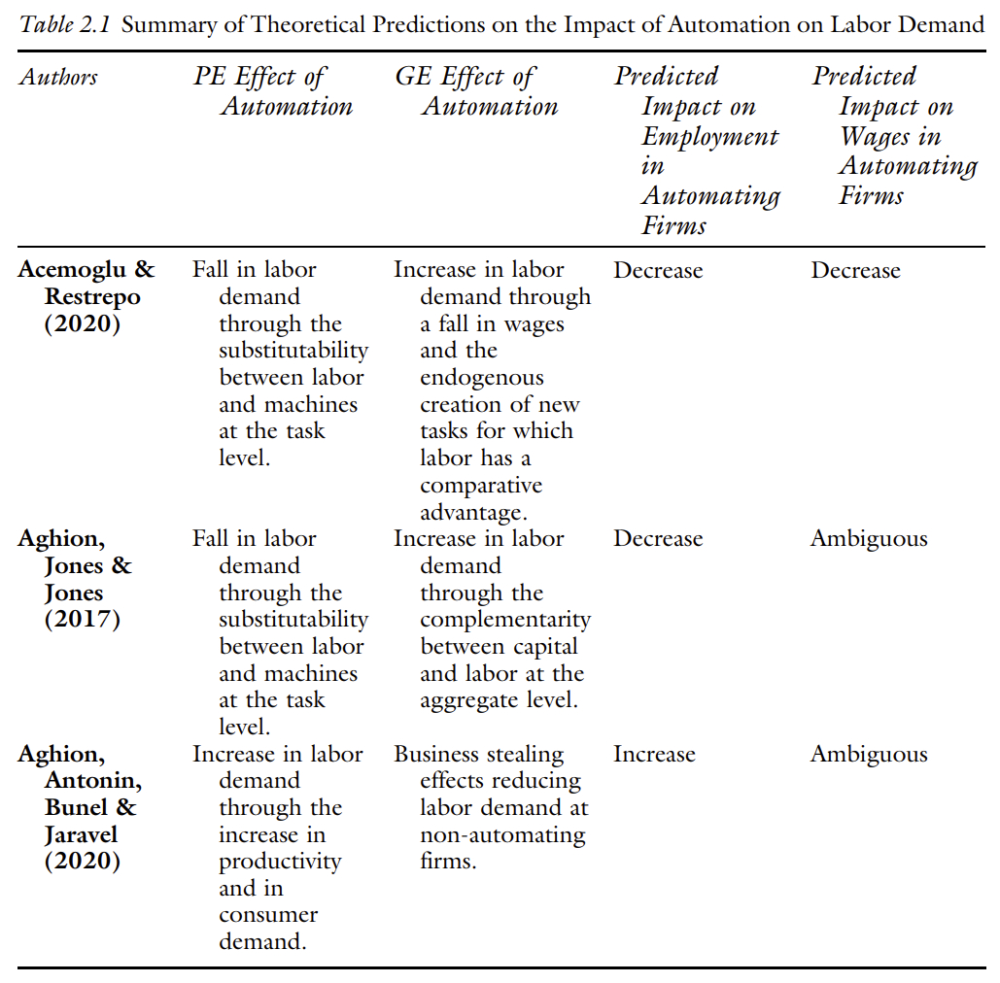
Discussion
As Japan’s working-age population shrinks, would you prioritize increasing employment, raising output per worker, or combining the two?
Explain how your choice would affect living standards and pension financing.
Data sources
References
- Ito and Hoshi (2020) Chapter 8, 10
- Fukao, K., Ikeuchi, K., Kim, Y., & Kwon, H. U. (2016). Why was Japan left behind in the ICT revolution? Telecommunications Policy, 40(5), 432–449.
- Aghion, P., Antonin, C., Bunel, S., & Jaravel, X. (2022). The effects of automation on labor demand. In L. Y. Ing & G. M. Grossman (Eds.), Robots and AI: A New Economic Era. Routledge.
- Okamoto, A. (2025). Pension reform for an aging Japan: Welfare and demographic dynamics. Journal of the Japanese and International Economies, 78, 101390.
- OECD (2025), Pensions at a Glance 2025: OECD and G20 Indicators, OECD Publishing, Paris, https://doi.org/10.1787/e40274c1-en.
- Ellison and Mullin (2014)
- Feyrer, Sacerdote, and Stern (2008)
- Rosenbluth (2007, 21)
- Japan Pension Service, Japanese Public Pension System